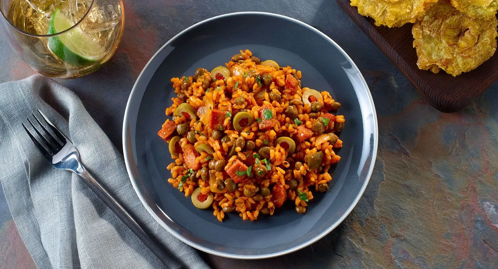

My Favorite Caribbean Recipes Cookbook
Arroz con Gandules - Rice & Pigeon Peas
Total Time 1hr
Makes 4 servings
Author GOYA

Arroz con Gandules
is the meal everyone in the Caribbean
enjoys for the holidays or other celebrations with
family and friends. After all, rice and pigeon
peas is the classic holiday meal. As a child of
Puerto Ricans
parents this delicious plate is a must in our Home.
INGREDIENTS
- 1 tbsp GOYA® Extra Virgin Olive Oil
- ¼ lb country ham, cubed
- ½ green bell pepper, chopped (about ½ cup)
- ½ yellow onion, chopped (about ½ cup)
-
2 packets GOYA®Sazón with Coriander and Annatto
- 1 tbsp GOYA® Minced Garlic
- 2 tsp finely chopped fresh cilantro
- 1 tsp GOYA® Ground Oregano
- 1½ cups GOYA® Medium Grain Rice
- 1 can (15 oz.) GOYA® Green Pigeon Peas
- 4 oz GOYA® Tomato Sauce
-
¼ cup GOYA® Manzanilla Spanish Olives Stuffed
with Minced Pimiento, sliced
DIRECTIONS
-
Heat oil in a medium, heavy saucepan over medium-high heat.
Add ham to pan; cook until brown, about 5 minutes. Stir in
peppers and onions; cook, stirring occasionally, scraping
up brown bits from bottom, until vegetables are soft and
translucent, 10 minutes. Add sazón, garlic, cilantro and
oregano. Cook until fragrant, about 30 seconds.
-
Add rice to pan. Cook, stirring frequently, until coated in
oil and toasted, about 1 minute. Stir in pigeon peas,
tomato sauce, olives and 1½ cups water; using a wooden spoon,
stir once and bring rice mixture to a boil. Cook, uncovered,
until water is evaporated, about 10 minutes. Gently stir rice
from bottom up.
-
Lower heat to medium low and cook, covered, until rice is
tender, about 15 minutes. Remove saucepan from heat. Gently
fluff rice with fork. Cover pan and let stand 5 minutes.
Grilled Mexican Corn with Chipotle Mayo
Total Time 30 min
Makes 6 servings
Author GOYA

A delicious side dish or appetizer! This rich
Grilled Mexican Corn with Chipotle Mayo has a
fabulous smoky and spicy flavor that’s perfect to
cook on your grill.
INGREDIENTS
- 1 tbsp butter
-
1 tsp GOYA®
Adobo All-Purpose Seasoning with Pepper
- ⅔ cup GOYA® Mayonnaise with Lime Juice
-
2 peppers from 1 can (7 oz.) GOYA® Chipotle Peppers in
Adobo Sauce, finely chopped, plus 1tbsp. adobo sauce
-
½ cup
GOYA® Queso Fresco,
crumbled
- ½ tsp GOYA® Oregano Leaf, crumbled
- 6 lime wedges, for serving
- 1 tsp GOYA Ground Oregano
- 1½ cups GOYA Medium Grain Rice
- 1 can (15 oz.) GOYA Green Pigeon Peas
- 4 oz GOYA Tomato Sauce
DIRECTIONS
- Preheat grill to medium-high heat; grease grates well.
-
Brush corn with tub butter and sprinkle with Adobo seasoning.
-
Grill corn, turning occasionally, for 10 to 15 minutes
or until well-marked and tender.
-
Meanwhile, in another small bowl, stir together mayonnaise,
chipotle peppers and adobo sauce until combined.
-
Brush mayonnaise chipotle mixture evenly over cobs of corn.
Sprinkle with queso fresco, cilantro, and oregano. Serve with
lime wedges.
Note:
For a smoother chipotle mayonnaise, purée in blender
or food processor.
Rellenos de Papa (Potato Balls)
Total Time 90 min
Makes 6 servings
Author Eva and Sue

INGREDIENTS
-
5 large potatoes - You can use Yukon Gold or White
Potatoes
-
1 pound of prepared pork picadillo (you know how to make
it with delicious sofrito)
- 2 tablespoons of achiote oil
- Salt to taste or use a Sazon packet
-
1 tablespoon of cornstarch plus more for dusting
(cornstarch helps to get rid of moisture when frying)
- 1 large egg (if desired)
- Canola Oil for Deep Frying
DIRECTIONS
-
Microwave potatoes or put a whole (don’t peel) potato in
cold water and boil until done. I like to microwave,
but be careful, they can get too dry.
-
Prepare your meat and set it aside (make sure the meat is
not too wet).
-
Once the potatoes are done, set aside to cool for a few
minutes, peel, and mash. I use a ricer because you get fewer
lumps.
-
Mix achiote oil, 1 tablespoon of cornstarch, and seasoning
(salt or Sazon, you could use both if you want) into mashed
potatoes.
-
Some people use an egg instead of achiote oil
(I am an old soul, so I use Achiote).
-
I let them completely cool for about 1/2 hour in the
fridge.
-
To make the balls, dust your hands with a little bit of
cornstarch, put a palm size potato in your hand and flatten.
-
Place a tablespoon of meat in the center. Don’t put too much
meat because it can be hard to close the ball. Close up the
ball and roll in your hand.
-
Next, you can dust a little cornstarch on the ball and roll.
You could flour instead of cornstarch; it’s up to you.
-
Now you are ready to deep fry in 350-degree oil. A good
way to test the oil is to dip a wooden spoon in oil, and
if you see bubbles are the spoon, the oil is hot enough to use.
-
Brown the balls until the desired coloring is reached.
Some people like them slightly brown and others like them
dark.